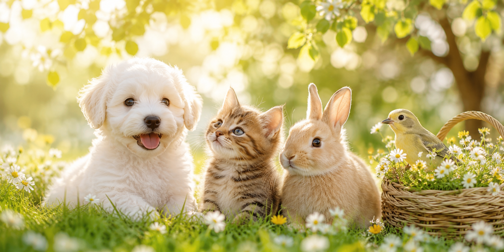
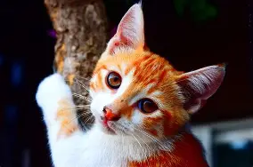
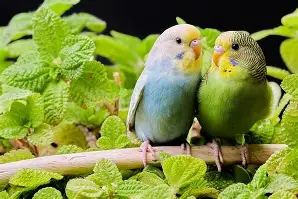
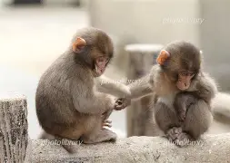

🐶 笑顔になれる
かわいい表情やしぐさを見るだけで、 自然と笑顔になります。
ほっと笑顔になる毎日

はじめまして！ 白くてふわふわな子犬の「もふまる」です。
このページでは、見ているだけで心があたたかくなる 動物たちの魅力をご紹介します。
ぜひ最後までゆっくり楽しんでください♪
犬や猫、うさぎ、小鳥など、動物たちはそれぞれ違った かわいらしさがあります。 のんびり眠る姿や元気いっぱい遊ぶ様子を見るだけで、 心がほっと落ち着きます。 私にとって動物たちは、毎日に笑顔と元気を届けてくれる 大切な存在です。
かわいい表情やしぐさを見るだけで、 自然と笑顔になります。
のんびり過ごす姿を見ていると、 疲れた気持ちがやさしく癒されます。
元気いっぱい遊ぶ姿を見ると、 前向きな気持ちになります。



動物たちのかわいい様子を動画ででもお楽しみください！
動物たちは、毎日の生活に癒しと笑顔を届けてくれる
大切な存在です。
このページを通して、動物たちの魅力が少しでも
伝わればうれしいです。